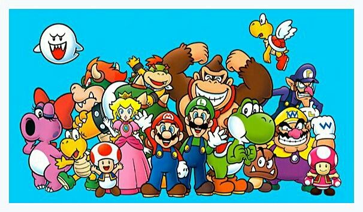

About Mario
Mario is awesome! He is an Italian Plumber from Brooklyn. He travels across the Mushroom Kingdom to rescue Princess Peach from the evil King Koopa.
Mario and his friends
Mario's Characteristics
- He's a short man with a big heart
- He eats mushrooms to get power ups
- He collects coins during his journey
Mario's Friends
Mario has many friends. His best friend is his brother, Luigi. He is loyal. Click on the links below to read more about them!